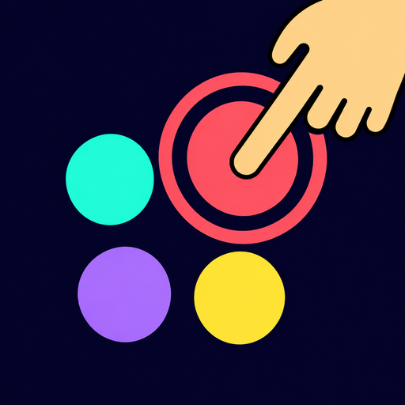

Poned todos un dedo en la pantalla
De 2 a 7 jugadores

¿Quién
empieza?
1.
Dejad el móvil plano en la mesa.
2.
Cada jugador pone un dedo y lo deja quieto.
3.
Tres segundos de tensión y el móvil elige.
Empezar
by PenTech v1.0